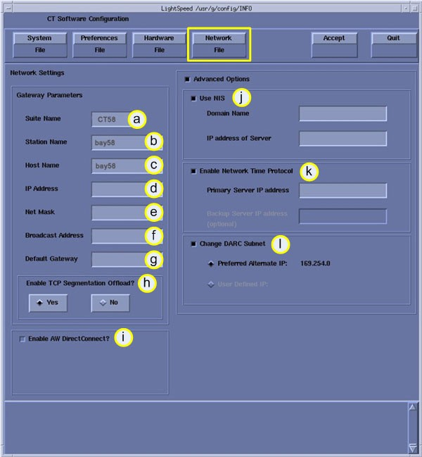

Illustration 5: Network Configuration Window

| NOTE: | This screen provides the ability to declare the CT system on a hospital network. Key information such as Host Name, IP Address, Net Mask (for CT systems on a subnet) must be obtained from the hospital network administrator. |